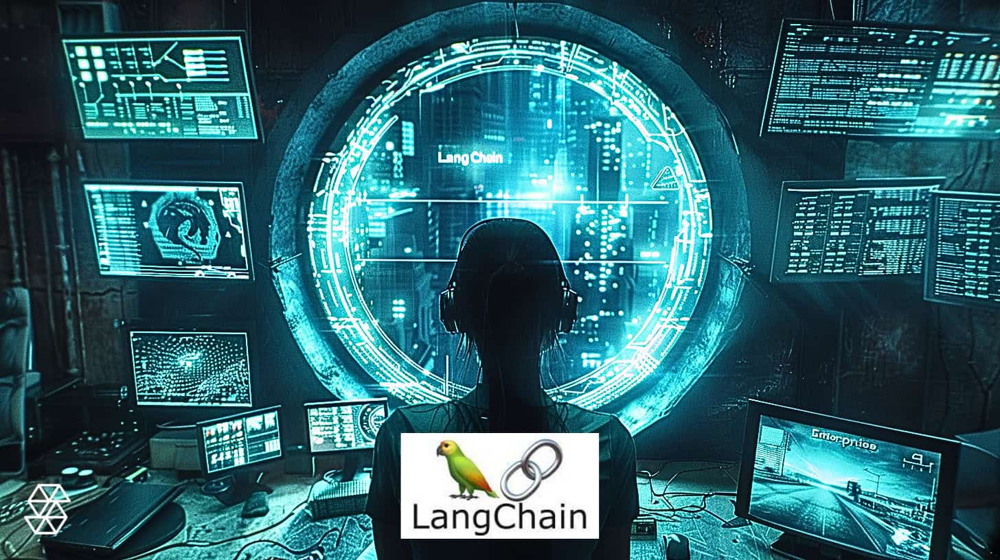

У цьому кроці ми розглянемо автономних агентів та інструмент LangChain, який дозволяє організувати складні
ланцюги взаємодії моделей GPT та зовнішніх даних. Автономні агенти здатні виконувати завдання без постійного
контролю користувача, що відкриває нові можливості для автоматизації бізнес-процесів, досліджень і творчих
задач. LangChain надає структуру для побудови таких систем і інтеграції з базами знань, API та іншими
сервісами.
1. Що таке автономні агенти
Автономні агенти — це програми, які приймають рішення і виконують дії самостійно, використовуючи дані,
правила та ШІ-моделі. Вони можуть:
- Виконувати повторювані завдання без людського втручання.
- Збирати інформацію, аналізувати її та генерувати звіти.
- Інтегруватися з різними сервісами через API для виконання складних робіт.
Для користувача це означає менше ручної роботи і більшу ефективність у процесах, які раніше вимагали
постійної уваги.
2. Основи LangChain
LangChain — це бібліотека для побудови ланцюгів обробки даних з використанням GPT та інших моделей. Основні
компоненти:
- Чейн (Chain): послідовність дій, яку виконує агент.
- Ланцюги промптів: шаблони для передачі запитів до моделей GPT.
- Інтеграції: API, бази знань, документи, зовнішні сервіси.
- Агенти: автономні об’єкти, які керують виконанням чайнів і приймають рішення на основі
результатів.
Ця структура дозволяє будувати складні системи без необхідності ручного програмування кожного кроку.
3. Приклади використання
LangChain і автономні агенти застосовуються у багатьох сферах:
- Автоматизація бізнес-процесів: генерація звітів, обробка замовлень, відповіді на запити клієнтів.
- Дослідження та аналітика: збір даних із різних джерел і формування узагальнень.
- Освітні платформи: інтерактивні навчальні агенти, які адаптуються під користувача.
- Творчі проекти: генерація ідей, сценаріїв, контенту для соцмереж та блогів.
4. Побудова базового агента
Щоб створити простого автономного агента, достатньо:
- Визначити мету агента (що він має робити).
- Створити чейн дій із необхідними промптами та інтеграціями.
- Налаштувати правила прийняття рішень (коли агент переходить до наступного кроку).
- Підключити джерела даних або API для отримання актуальної інформації.
Наприклад, агент може автоматично збирати дані з веб-сайтів, аналізувати їх та формувати щоденний звіт для
керівника.
5. Рекомендації для новачків
- Починайте з невеликих задач: створіть одного агента для одного конкретного завдання.
- Використовуйте готові шаблони LangChain, щоб зрозуміти принцип роботи.
- Тестуйте результати агента на невеликих обсягах даних перед масштабуванням.
- Документуйте процеси, щоб спростити інтеграцію нових агентів у майбутньому.
- Не забувайте про безпеку даних і контроль результатів, особливо якщо агент працює з конфіденційною
інформацією.
6. Виклики та ризики
Навіть автономні агенти мають свої обмеження і виклики:
- Помилки у даних або логіці можуть призвести до некоректних результатів.
- Складність інтеграції з різними системами може вимагати технічних знань.
- Важливо контролювати дії агента, щоб уникнути небажаних наслідків.
- Масштабування агентів без належного планування може створити навантаження на сервери та API.
7. Підсумок
Автономні агенти та LangChain відкривають нові можливості для автоматизації, аналітики та творчих процесів.
Вони дозволяють зменшити ручну роботу, отримувати точніші результати і інтегрувати AI у реальні
бізнес-процеси. Для початківців важливо починати з невеликих проектів, експериментувати та поступово
розширювати функціонал агентів. Дотримання правил безпеки, структурованість даних і контроль результатів
забезпечать успішну інтеграцію та ефективне використання автономних агентів у вашій діяльності.
На головну
Завершити та наступний крок